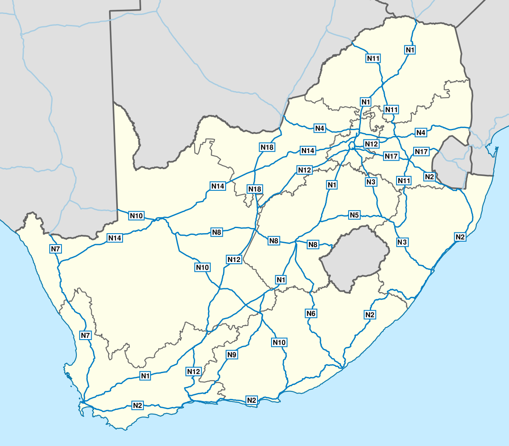
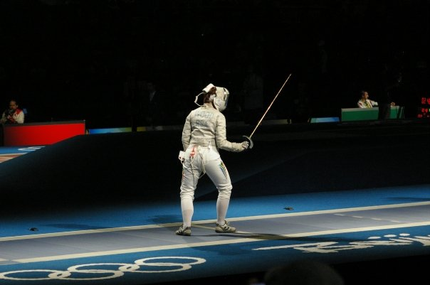

⚔
Fencing in South Africa
Show Pages ↓
Hide Pages ↑
✦ The South African Fencing Federation ✦
Almost all the necessary information can be found on the Fencing Federation of South Africa’s website (although some information is outdated). This includes contact information for listed clubs and links for the calendar. The web page that you are reading is for the information about what fencing in the country entails.
✦ How Big Is It? ✦
It has quite a small group of fencers who compete at a national level. Entries for the largest national events go from 30-50 (senior men’s epee for example). Smaller events (senior women’s sabre and senior men’s sabre) can be from 6-12 people. Clubs vary in size but the largest can be found in Gauteng, the Western Cape and Limpopo. The amount of fencers per province and city is quite consistent with population spread across the country. This is a results list for the last national in the Western Cape.
✦ How Expensive Is It? ✦
Club and coaching fees can go from R500 to R1500 per month. It is highly recommended that you get coaching if you are starting out (most places will not let you fence without having some coaching) as without it, it’s extremely difficult to build up the techniques.
If you want to buy your own equipment, the situation in South Africa requires patience. There are limited options for vendors (one from facebook, probably the best prices locally but no listings for items plus shipping can vary. I have found this vendor to be reliable in the past and they can deliver to national competitions as they are usually in attendance as they are active in the Federation. There is another run by one of the clubs, they are more pricey and can take their time to deliver) and your best bet can sometimes be to buy with other fencers in a bulk order. Any equipment that can be used in international competition will get a lot more expensive however. Every club will have some way to get equipment though and if you join any they will help find the best options available to you. You may have to rely on the international travels of friends or yourself to acquire equipment from Europe. This is a result of shipping costs and the exchange rate due to a relatively weak Rand.
A complete blade (grip wires and everything else needed included) can go from R1 500 all the way up to R5 000. There are two main kinds of blades one can buy. There are “FIE blades” (blades which can be used in international competition) and “non-FIE blades” (blades which can be used in any other setting). FIE blades last much longer and in general maintain their shape better than non-FIE blades. Blades will break depending on how often you fence and the kinds of actions you do while fencing. It is reasonable to expect a blade to last 6 months or more while fencing very regularly (4 sessions of 3 hours a week).
Equipment Price List
| Equipment | non-FIE | FIE |
| Jacket | +-€100 | +-€170 |
| Breeches | +-€60 | +-€110 |
| Mask | +-€80 | +-€150 |
| Plastron | +-€30 | +-€80 |
| Blade (with grip, plugs, wire, tip) | +-€80 | +-€200 |
| Glove | +-€20 | +-€30 |
| Breast Protector | +-€25 | +-€25(no-FIE version) |
| Body Wire | +-€20 | +-€20(no-FIE version) |
The above prices do not include shoes, long socks and equipment that is weapon specific to foil and sabre. Some things like masks will have foil and sabre equivalents which cost about €5 more or so.
A full set of protective gear including the mask and glove can go for over R 10 000 for FIE gear and around R 4 000 for a complete set of protective gear. It is recommended that one buys parts piece by piece rather than all at once (clubs will let you borrow equipment that you don’t have, depending on if they have the spare equipment).
All in all, fencing in South Africa can be quite expensive. Cheapest options are to join university clubs which will often cost less than 2 months of membership fees for a private club for a whole year of membership. This is not the case for all university clubs however.
✦ What is Competing Like? ✦
The Landscape
If you want to compete and make it to the Olympics or World Championships, you will need to spend a lot on equipment. Your best bet would be to stick to epee as your competitive weapon as the pool of competitors is the largest (this is partially because of pentathlon including epee as an event, it is common to find fencers who began with pentathlon and specialised later). Foil has a smaller pool of fencers and has shown some growth, but the standard is lower compared to epee in terms of international results. Refereeing in foil takes a larger role than in epee as the right to attack is decided by the referee. The way the rules are applied can change a lot from year to year at the international level. South African referees often referee in the way that they did ten years ago. There are exceptions but, there is ultimately less infrastructure for developing foil now. Sabre is tiny, there are few coaches, and it is easily the country’s weakest weapon in terms of international results. It would be unadvisable to compete in it unless you REALLY want to be the biggest fish in the smallest pond.
Making the team
If you want to make it to the national team, there are several money related obstacles. Entrance fees for competitions cost +-R 400 for provincials. For nationals you require a national license which costs R 400 for each year plus the fee for the national competition which is an additional R 400+. The cheapest area to be situated in would be Gauteng. This is because national competitions take place in Gauteng, Limpopo, Western Cape, Eastern Cape, Free State and Kwa-Zulu Natal. To ensure you can get points for national rankings, you will need to travel to these places 3 or 4 times a year.
To make the national team, you will need to be in the top 4 of epee, your age category, and your gender category. As of a recent South African sport governing body change in policy, national colours are only awarded to a smaller group if there are fewer competitors in that group. For example, sabre would only award top 1 national colours and foil maybe 3. If you are to make the national team and qualify for international competitions like African Championships (unless you qualify for funding as a previously disadvantaged group) you would have to pay your own way for travel, equipment, and accommodation. The rewards for do well in a competition like African Championships is a world ranking. If you secure a high enough world ranking you can qualify for World Championships.
Olympic Qualification

The big one, the Olympics. If you want to qualify for the Olympics, you must do REALLY well at international competitions or win the African Zonal Qualifier. The easiest way in would be to win the African Zonal Qualifier. This has very recently been achieved by one South African men's epee fencer ahead of the Paris 2024 Olympics. Therefore, There will be one fencer representing South Africa at the Paris 2024 Olympics.
My Experience
Competing in fencing is more expensive than other sports in South Africa. It gets exponentially more expensive if you want to compete internationally and/or travel for nationals. Fencing at a club while only competing at provincials and nationals when they come to your province is an enjoyable experience and considerably less expensive.
